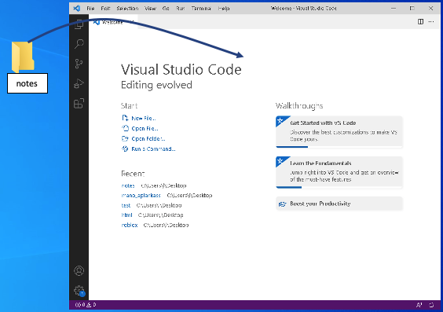
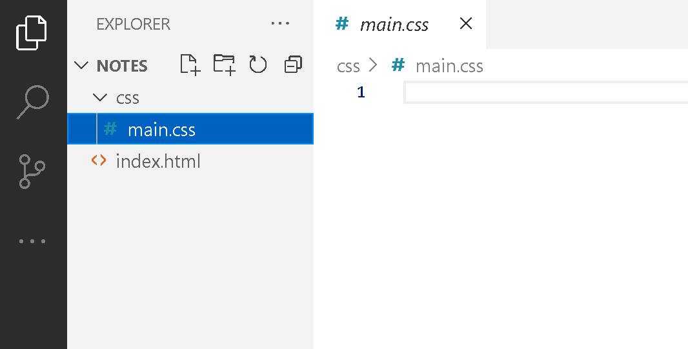
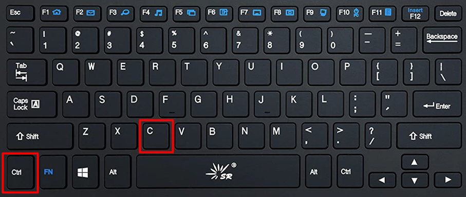
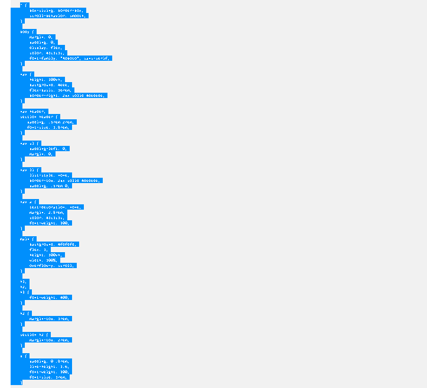
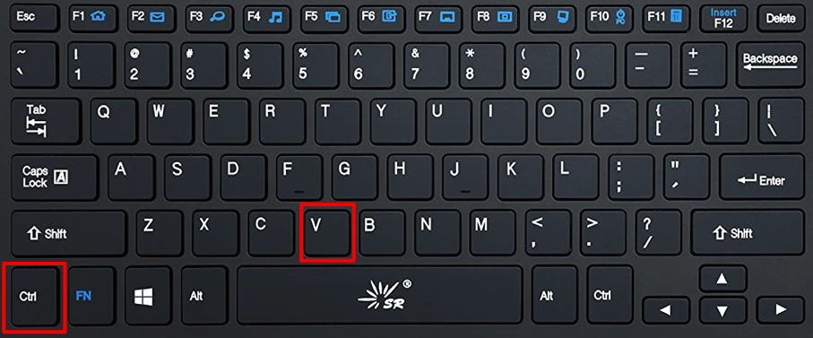
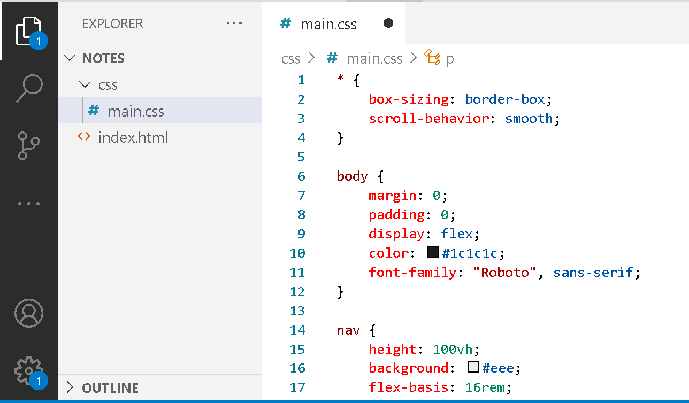
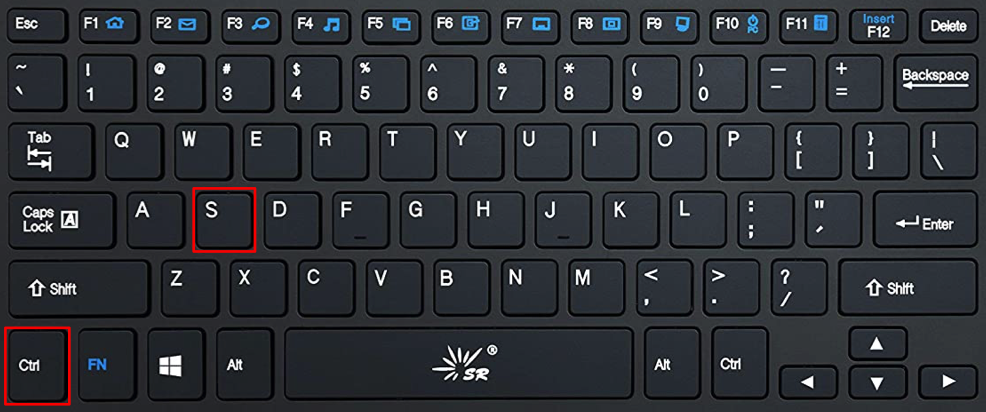
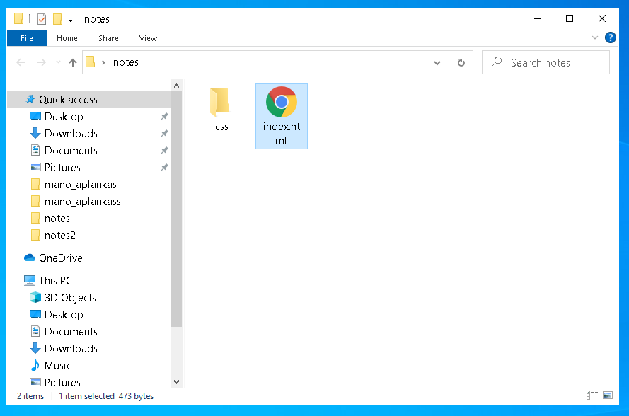
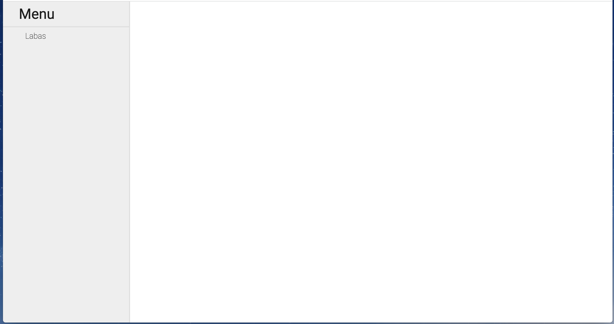

Šioje pamokoje rasite:
- Kodą, kurį rašėme būrelio metu.
Veiksmai kuriuos reikia atlikti:
- Pasileiskite Visual Studio Code programą, (programą galite parsisiųsti paspaudę čia nemokamai);
-
Aplanką, kuriame yra kodas nutempkite į atidarytą
Visual Studio Code programos langą (aplanką galite
parsisiųsti paspaudę čia, aplanke rasite tuščius failus, kuriuose reikės įterpti nukopijuotą
kodą);
(pavyzdys kaip į Visual Studio Code programą įsikelti aplanką)  - Jeigu parsisiuntėte aplanką notes.zip, jį reikia išsiarchyvuoti su WinZip arba WinRar programa. Tada išarchyvuotą aplanką įkelti į Visual Studio Code programą (parodyta aukščiau). Atsisiųstame notes aplanke rasite index.html failą ir css aplanką. Aplanke css rasite main.css failą. 
-
Su pele pažymėkite visą žemiau parašytą
css kodą
ir nukopijuokite su klavišais
ctrl + c.
 
-
Tada faile main.css ištrinkite prieš tai buvusį
css kodą ir klavišais
ctrl + v įklijuokite nukopijuotą
naują kodą.
 
- Išsaugokite kodą, kurį įklijavote main.css faile su klavišais ctrl + s. 
- Įeikite į notes aplanką, tada pelės kairiuoju klavišu du kartus paspauskite ant index.html failo. 
Jeigu atlikote viską teisingai turėjote gauti tokį vaizdą naršyklėje
css kodas
* {
box-sizing: border-box;
scroll-behavior: smooth;
}
body {
margin: 0;
padding: 0;
display: flex;
color: #1c1c1c;
font-family: "Roboto", sans-serif;
}
nav {
height: 100vh;
background: #eee;
flex-basis: 16rem;
border-right: 2px solid #dedede;
}
nav header,
section header {
padding: .5rem 2rem;
font-size: 1.8rem;
}
nav ul {
padding-left: 0;
margin: 0;
}
nav li {
list-style: none;
border-top: 2px solid #dedede;
padding: 0.5rem 0;
}
nav a {
text-decoration: none;
margin: 2.8rem;
color: #1c1c1c;
font-weight: 300;
}
main {
background: #fdfdfd;
flex: 1;
height: 100vh;
width: 100%;
overflow-y: scroll;
}
h1,
h2,
h3 {
font-weight: 400;
}
h2 {
margin-top: 1rem;
}
section h2 {
margin-top: 2rem;
}
p {
padding: 0 0.8rem;
line-height: 1.6;
font-weight: 300;
font-size: 1rem;
}
li {
padding: 0.5rem;
}
code {
display: block;
background: #f7f7f7;
margin-left: 1rem;
padding: 0.8rem;
white-space: pre;
}
@media only screen and (max-width: 40rem) {
body {
flex-direction: column;
}
nav {
max-height: 8rem;
border-right: none;
}
nav h2 {
margin: 0.5rem 0;
}
main {
height: auto;
width: 100%;
}
}